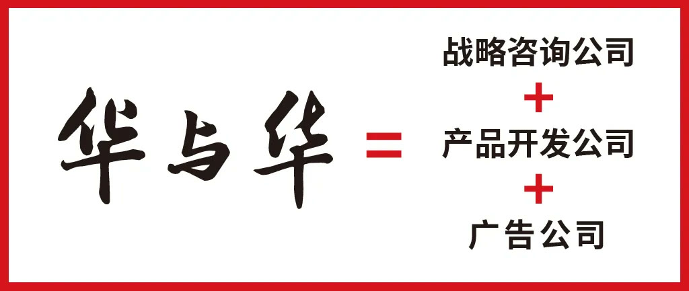
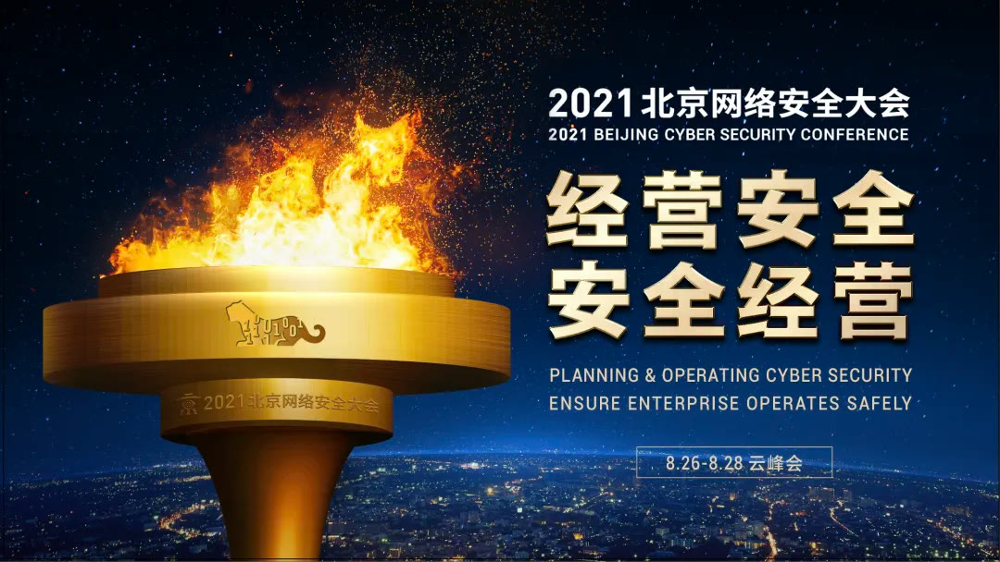
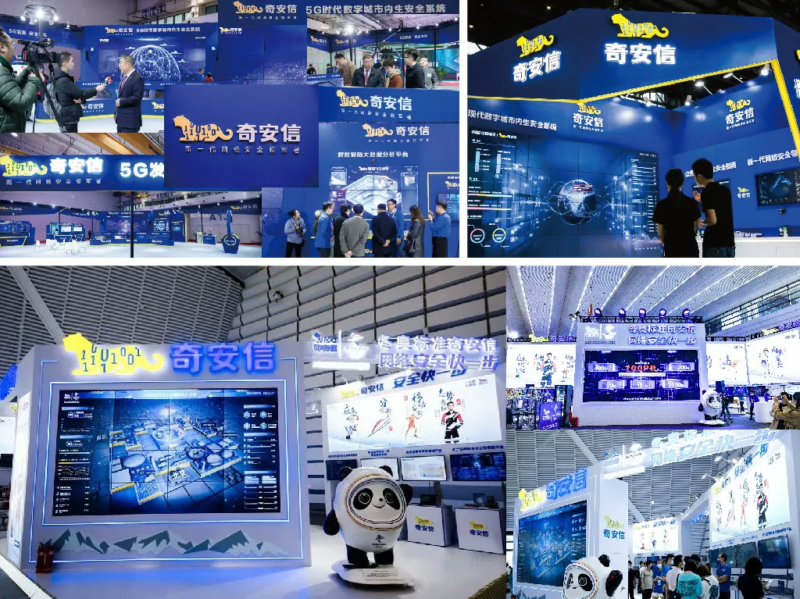

01 · 行业
从互联网安全到网络安全
词语升级对应产业边界扩大，也为企业战略和公共价值建立更准确的表达。

02 · 战略
用三位一体模型确定增长方向
企业战略、业务组合和品牌表达被放在同一结构中，避免技术产品与品牌传播分离。

03 · 符号
数据虎符把安全能力变成可见信号
超级符号把抽象网络安全转化为具象、专属且可重复的品牌资产。

04 · 公关
用品牌大会建立行业信号塔
北京网络安全大会把企业、专家和公共议题组织在一起，成为持续输出观点与行业影响力的公关产品。

05 · 积累
冬奥与持续改善共同扩充品牌弹药库
重大项目资产被系统沉淀，日常内容与应用持续改善，使品牌信号在不同场景保持一致。
